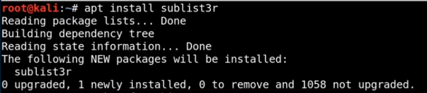

1. sublist3r : it is kali linux tool

sublist3r -help : to know more and see all option

sublist3r -d [ domin name ]


2. crt.sh : certificate fingurprinting : crt.sh | Certificate Search

it show all certificate

3. owasp amass : OWASP/Amass: In-depth Attack Surface Mapping and Asset Discovery (github.com)
github code : https://github.com/OWASP/Amass.git

4. tomnomnom /httprobe : tomnomnom (Tom Hudson) (github.com)
when we have many domain and subdomain then not all of them are active . so pass list od domain and subdomain in this and it tells about only active domains